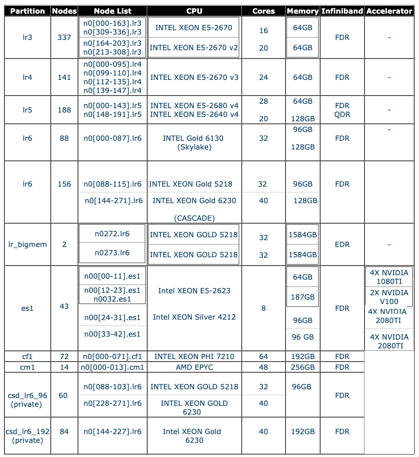

Lawrencium 101 HPC Training
February 8, 2021
Wei Feinstein
Outline
- Overview of Lawrencium supercluster
- Access/login to clusters
- Access software module farm on the system
- Data transfer to/from clusters
- Job submission and monitoring
- Jupyter notebooks using Open Ondemand
- Remote visualization
- Hands-on exercises
Lawrencium Cluster Overview
- Computing service provided by the IT Division to support researchers in all disciplines at the Lab
- Lawrencium is a LBNL Condo Cluster Computing program
- Significant investment from LBNL
- Individual PIs buy in compute nodes and storage
- Computational cycles are shared among all lawrencium users
- Lawrencium:
- data center is housed in the building 50B
- 1145 CPU Compute nodes, more than 30,192 cores
- 160 GPUs
- 722 User Accounts
- 416 Groups
- Departmental clusters:
- share LRC infrastructure, but solely used by individual divisions
- ~15, such as nano, mhg, alsacc…
- Standalone Clusters
- UC Berkeley
- Advanced Light Source
- Nuclear Science Division
- Applied Nuclear Physics
- Biological Systems Engineer Division
Getting Access to Lawrencium
Three types of Project Accounts
- Primary Investigator (PI) Computing Allowance (PCA) account: free 300K SUs per year (pc_xxx)
- Condo account: PIs can buy in compute nodes to be added to the general pool, in exchange for their own priority access and share the Lawrencium infrastructure (lr_xxx)
- Recharge account: pay as you go with minimal recharge rate ~ $0.01/SU (ac_xxx)
- Details about project accounts can be found here and project request form
- PIs can add researchers/students working with them to get user accounts with access to the PCA/condo/recharge resources available to them
User accounts
Login to Lawrencium Cluster
- Linux terminal (command-line) session.
- Mac terminal (see Applications -> Utilities -> Terminal).
- Windows PuTTY.
- One-time passwords (OTPs): set up your smartphone or tablet with Google Authenticator
- Login:
ssh $USER@lrc-login.lbl.gov
$ password:
- Enter your PIN followed by the one-time password from which your Google Authenticator app generates on your phone / tablet.
- DO NOT run jobs on login nodes!!
User Space
- Home:
/global/home/users/$USER/ 10GB per user, data is backed up
- Global scratch:
/global/scratch/$USER/, shared, no backup, where to launch jobs
- Shared group space/projects
- /global/home/groups-sw/ 200GB backup
- /global/home/group/` 400GB no backup
- Condo storage:
e.g. /clusterfs/etna/
Data Transfer
scp/rsync on lrc-xfer.lbl.gov (DTN)
# Transfer to Lawrencium (from your local machine)
scp file-xxx $USER@lrc-xfer.lbl.gov:/global/home/users/$USER
scp -r dir-xxx $USER@lrc-xfer.lbl.gov:/global/scratch/$USER
# Transfer data from Lawrencium (from your local machine)
scp $USER@lrc-xfer.lbl.gov:/global/scratch/$USER/file-xxx ~/Desktop
# Transfer from Lawrencium to Another Institute
ssh $USER@lrc-xfer.lbl.gov # DTN
scp -r file-on-lawrencium $USER@other-institute:/destination/path/$USER
rsync: a better data transfer tool with regular backups
rsync -avpz file-at-local $USER@lrc-xfer.lbl.gov:/global/home/user/$USER
- On Window
- WinSCP: SFTP client and FTP client for Microsoft Windows
- FileZella: multi-platform program via SFTP
Data Transfer with Globus
- Transfer data faster and unattended between endpoints, see instructions
- Berkeley Lab users can use Globus to access and transfer files in/out of their Berkeley Lab Google drive also. Details on how to access LBL Google drive via Globus can be found here
- Possible endpoints include: lbnl#lrc, your laptop/desktop, NERSC, among others.
- Transfer data to/from your laptop (endpoint setup):
- Create an endpoint for your machine
- Globus Connect Personal set up
- Globus Connect Pesonal actively running on your machine.

Software Module Farm
- Commonly used compiler, software tools provided to all cluster users
- Maintained on a centralized storage device and mounted as read-only NFS file system
- Compilers: intel, gcc, MPI compilers, Python
- Tools: matlab, singularity, cuda
- Applications: machine learning, QChem, MD, cp2k
- Libraries: fftw, lapack
- Environment Modules: framework to manage users’ software environment dynamically
- Properly set up PATH, LD_LIBRARY_PATH…
- Avoid clashes between incompatible software
Install Python Modules
- Users don’t have admin rights, but most software can be installed –prefix=/dir/to/your/path
- Python modules: abundantly available but cannot be installed in the default location without admin rights.
- pip install –user package_name
- export PYTHONPATH
[wfeinstein@n0000 ~]$ module available python
--------------------- /global/software/sl-7.x86_64/modfiles/langs -----------------------------------
python/2.7 python/3.5 python/3.6(default) python/3.7 python/3.7.6 python/3.8.2-dll
[wfeinstein@n0000 ~]$ module load python/3.7
[wfeinstein@n0000 ~]$ python3 -m site --user-site
/global/home/users/wfeinstein/.local/lib/python3.7/site-packages
[wfeinstein@n0000 ~]$ pip install --user ml-python
...
Successfully built ml-python
Installing collected packages: ml-python
Successfully installed ml-python-2.2
[wfeinstein@n0000 ~]$ export PYTHONPATH=~/.local/lib/python3.7/site-packages:$PYTHONPATH
- pip install –install-option=“–prefix=$HOME/.local” package_name
- python setup.py install –home=/home/user/package_dir: install from souce code after download the code
- python -m venv my_env: creat a virutal environment
SLURM: Resource Manager & Job Scheduler
Overview
SLURM is the resource manager and job scheduler to managing all the jobs on the cluster
Why is this necessary?
- prevent users’ jobs running on the same nodes.
- allow everyone to fairly share Lawrencium resources.
The basic workflow is:
- login to Lawrencium; you’ll end up on one of the login nodes in your home directory
- cd to the directory from which you want to submit the job
- submit the job using sbatch (or an interactive job using srun, discussed later)
- SLURM assign compute nodes to jobs
- the job will be running on a compute node, not the login node
Accounts, Partitions, Quality of Service (QOS)

More info click here
- Check slurm association, such as qos, account, partition, the information is required when submitting a job
sacctmgr show association user=wfeinstein -p
Cluster|Account|User|Partition|Share|Priority|GrpJobs|GrpTRES|GrpSubmit|GrpWall|GrpTRESMins|MaxJobs|MaxTRES|MaxTRESPerNode|MaxSubmit|MaxWall|MaxTRESMins|QOS|Def QOS|GrpTRESRunMins|
perceus-00|pc_scs|wfeinstein|lr6|1||||||||||||lr_debug,lr_lowprio,lr_normal|||
perceus-00|ac_test|wfeinstein|lr5|1||||||||||||lr_debug,lr_lowprio,lr_normal|||
perceus-00|pc_test|wfeinstein|lr4|1||||||||||||lr_debug,lr_lowprio,lr_normal|||
perceus-00|pc_test|wfeinstein|lr_bigmem|1||||||||||||lr_debug,lr_lowprio,lr_normal|||
perceus-00|lr_test|wfeinstein|lr3|1||||||||||||condo_test|||
perceus-00|scs|wfeinstein|es1|1||||||||||||es_debug,es_lowprio,es_normal|||
...
Job Submission
Submit an Interactive Job
Commonly used for code debugging, testing, monitoring
- srun: add your resource request to the queue. When the allocation starts, a new bash session will start up on one of the granted nodes
srun --account=ac_xxx --nodes=1 --partition=lr5 --qos=lr_normal --time=1:0:0 --pty bash
srun -A ac_xxx -N 1 -p lr5 -q lr_normal -t 1:0:0 --pty bash
- salloc: functions similarly srun –pty bash. However when the allocation starts, a new bash session will start up on the login node
[wfeinstein@n0003 ~]$ salloc --account=scs --nodes=1 --partition=lr6 --time=1:0:0 --qos=lr_normal
salloc: Granted job allocation 28755918
salloc: Waiting for resource configuration
salloc: Nodes n0101.lr6 are ready for job
[wfeinstein@n0003 ~]$ squeue -u wfeinstein
JOBID PARTITION NAME USER ST TIME NODES NODELIST(REASON)
28755918 lr6 bash wfeinste R 0:14 1 n0101.lr6
[wfeinstein@n0003 ~]$ ssh n0101.lr6
[wfeinstein@n0101 ~]$ hostname
n0101.lr6
Once you are on the node, run your commands or application
# cd to your work directory
cd /your/dir
## Commands to run
module load python/3.7
python my.py >& mypy.out
Node Features
Compute nodes may have different hardware within a SLURM partition - lr6_sky: Intel Skylake - lr6_cas: Intel Cascade Lake - lr6_cas,lr6_m192: 192GB RAM - lr6_sky,lr6_m192 - When a certain type of hardware is needed, wait time for the resources typically is longer - –constrain SLURM flag
[wfeinstein@n0000 ~]$ srun --account=scs --nodes=1 --partition=lr6 --time=1:0:0 --qos=lr_normal --constrain=lr6_sky --pty bash
[wfeinstein@n0081 ~]$ lscpu |egrep '^CPU\(s\):|Model name'
CPU(s): 32
Model name: Intel(R) Xeon(R) Gold 6130 CPU @ 2.10GHz
[wfeinstein@n0081 ~]$ free -h
total used free shared buff/cache available
Mem: 93G 2.2G 83G 3.1G 7.4G 87G
Swap: 8.0G 0B 8.0G
[wfeinstein@n0081 ~]$ exit
exit
[wfeinstein@n0000 ~]$ srun --account=scs --nodes=1 --partition=lr6 --time=1:0:0 --qos=lr_normal --constrain=lr6_sky,lr6_m192 --pty bash
[wfeinstein@n0023 ~]$ free -h
total used free shared buff/cache available
Mem: 187G 2.6G 172G 1.7G 12G 182G
Swap: 8.0G 1.5G 6.5G
- Node features can be found here
Memeory specification –mem (MB) is required when using a shared partition:
- Most Lawrencium partitions are exclusive: one user owns an entire compute node
- Some condo accounts or clusters, such as es1, where each compute node can be shared by multiple users
- –ntaks=1 –mem=2300 (1 core on a 96GB RAM, 40 core node)
- –ntaks=2 –mem=4600 (2 core on a 96GB RAM, 40 core node)
- –ntaks=1 –mem=4700 (1 core on a 192GB RAM, 40 core node)
- –ntaks=2 –mem=9400 (2 core on a 192GB RAM, 40 corenode)
LR6 has two large memory nodes (1.5TB) - –partition=lr_bigmem
Submit a Batch Job
- Get help with the complete command options
sbatch --help
- sbatch: submit a job to the batch queue system
sbatch myjob.sh
Job Submission Script Example - myjob.sh
#!/bin/bash -l
# Job name:
#SBATCH --job-name=mytest
#
# Partition:
#SBATCH --partition=lr6
#
# Account:
#SBATCH --account=pc_test
#
# qos:
#SBATCH --qos=lr_normal
#
# Wall clock time:
#SBATCH --time=1:00:00
#
# Node count
#SBATCH --nodes=1
#
# Node feature
#SBATCH --constrain=lr6_cas
#
# cd to your work directory
cd /your/dir
## Commands to run
module load python/3.7
python my.py >& mypy.out
Submit a Job to GPU Cluster (es1)
Interactive GPU Jobs
- –gres=gpu:type:GPU#
- –ntasks=CPU_CORE#
- Note: Ratio of CPU_CORE#:GPU# = 2:1
srun -A your_acct -N 1 -p es1 --gres=gpu:1 --ntasks=2 -q es_normal –t 0:30:0 --pty bash
[wfeinstein@n0000 ~]$ srun -A scs -N 1 -p es1 --gres=gpu:1 --ntasks=2 -q es_normal -t 0:30:0 --pty bash
[wfeinstein@n0019 ~]$ nvidia-smi
[wfeinstein@n0019 ~]$ nvidia-smi
Sat Feb 6 10:13:25 2021
+-----------------------------------------------------------------------------+
| NVIDIA-SMI 440.44 Driver Version: 440.44 CUDA Version: 10.2 |
|-------------------------------+----------------------+----------------------+
| GPU Name Persistence-M| Bus-Id Disp.A | Volatile Uncorr. ECC |
| Fan Temp Perf Pwr:Usage/Cap| Memory-Usage | GPU-Util Compute M. |
|===============================+======================+======================|
| 0 Tesla V100-SXM2... Off | 00000000:62:00.0 Off | 0 |
| N/A 45C P0 53W / 300W | 0MiB / 16160MiB | 0% Default |
+-------------------------------+----------------------+----------------------+
| 1 Tesla V100-SXM2... Off | 00000000:89:00.0 Off | 0 |
| N/A 45C P0 55W / 300W | 0MiB / 16160MiB | 0% Default |
+-------------------------------+----------------------+----------------------+
+-----------------------------------------------------------------------------+
| Processes: GPU Memory |
| GPU PID Type Process name Usage |
|=============================================================================|
| No running processes found |
+-----------------------------------------------------------------------------+
[wfeinstein@n0019 ~]$ hostname
n0019.es1
Submit A GPU Batch Job
Job Submission Script Example
#!/bin/bash -l
#SBATCH --job-name=mytest
#SBATCH --partition=es1 ## es1 GPU partition
#SBATCH --account=pc_test
#SBATCH --qos=es_normal ## qos of es1
#SBATCH --time=1:00:00
#SBATCH --nodes=1
#SBATCH --gres=gpu:GTX1080TI:2 ## GPUs
#SBATCH --ntasks=4 ## CPU cores
#
cd /your/dir
## Commands to run
module load python/3.7
python my.py >& mypy.out
Submit A MPI Job
When use multiple nodes, you need to carefully specify the resources. The key flags for use in your job script are:
- –nodes (or -N): number of nodes
- –ntasks-per-node: number of tasks (i.e., processes) to run on each node, especially useful when your job uses large memory, < Max Core# on a node
- –cpus-per-task (or -c): number of CPUs to be used for each task
- –ntasks (or -n): total number of tasks and let the scheduler determine how many nodes and tasks per node are needed.
- In general –cpus-per-task will be 1 except when running threaded code.
#!/bin/bash -l
#SBATCH --job-name=myMPI
#SBATCH --partition=lr6
#SBATCH --account=scs
#SBATCH --qos=lr_normal
#SBATCH --time=2:00:00
#SBATCH --nodes=2 ## Nodes count
##SBATCH --ntasks=80 ## Number of total MPI tasks to launch (example):
##SBATCH --ntasks-per-node=20 ## important with large memory requirement
cd /your/dir
## Commands to run
module load intel/2016.4.072 openmpi/3.0.1-intel
mpirun -np 80 ./my_mpi_exe ## Launch your MPI application
Submit jobs in Parallel (GNU Parallel)
GNU Parallel is a shell tool for executing jobs in parallel on one or multiple computers.
- A job can be a single core serial task, multi-core or MPI application.
- A job can also be a command that reads from a pipe.
- The typical inputs:
- bash script for a single task
- a list of parameters required for each task
- Easy to match output file names with those of input files
Example using GNU Parallel
Bioinformatics tool blastp to compare 200 target protein sequences against sequence DB
Serial bash script: run-blast.sh
#!/bin/bash
module load bio/blast/2.6.0
blastp -query $1 -db ../blast/db/img_v400_PROT.00 -out $2 -outfmt 7 -max_target_seqs 10 -num_threads 1
task.lst: each line provides one parameter to one task:
[user@n0002 ]$ cat task.lst
../blast/data/protein1.faa
../blast/data/protein2.faa
...
../blast/data/protein200.faa
Instead submit single core-jobs 200 times, which potentially need 200 nodes, GNU parallel sends single-core jobs in parallel using all the cores available, e.g. 2 compute nodes 32*2=64 parallel tasks. Once a CPU core becomes available, another job will be sent to this resource.
module load parallel/20200222
JOBS_PER_NODE=32
parallel --jobs $JOBS_PER_NODE --slf hostfile --wd $WDIR --joblog task.log --resume --progress \
-a task.lst sh run-blast.sh {} output/{/.}.blst
Detailed information of how to submit serial tasks in parallel with GNU parallel
Monitoring Jobs
- sinfo: check node status of partitions (idle, allocated, drain, down)
[wfeinstein@n0000 ~]$ sinfo –r –p lr5
PARTITION AVAIL TIMELIMIT NODES STATE NODELIST
lr5 up infinite 3 drain* n0004.lr5,n0032.lr5,n0169.lr5
lr5 up infinite 2 down* n0112.lr5,n0118.lr5
lr5 up infinite 58 alloc n0000.lr5,n0001.lr5,n0002.lr5,n0003.lr5,n0006.lr5,n0009.lr5
lr5 up infinite 115 idle n0005.lr5,n0007.lr5,n0008.lr5
lr5 up infinite 14 down n0048.lr5,n0050.lr5,n0054.lr5
...
- squeue: check job status in the batch queuing system (R or PD)
squeue –u $USER
JOBID PARTITION NAME USER ST TIME NODES NODELIST(REASON)
28757187 lr6 bash wfeinste R 0:09 1 n0215.lr6
28757723 es1 bash wfeinste R 0:16 1 n0002.es1
28759191 lr6 bash wfeinste PD 0:00 120 (QOSMaxNodePerJobLimit)
- sacct: check job information or history
[wfeinstein@n0002 ~]$ sacct -j 28757723
JobID JobName Partition Account AllocCPUS State ExitCode
------------ ---------- ---------- ---------- ---------- ---------- --------
28757723 bash es1 scs 2 RUNNING 0:0
[wfeinstein@n0002 ~]$ sacct -X -o 'jobid,user,partition,nodelist,stat'
JobID User Partition NodeList State
------------ --------- ---------- --------------- ----------
28755594 wfeinste+ lr5 n0192.lr5 COMPLETED
28755597 wfeinste+ lr6 n0101.lr6 COMPLETED
28755598 wfeinste+ lr5 n0192.lr5 COMPLETED
28755604 wfeinste+ csd_lr6_s+ n0144.lr6 COMPLETED
28755693 wfeinste+ lr6 n0101.lr6 CANCELLED+
....
28757187 wfeinste+ lr6 n0215.lr6 COMPLETED
28757386 wfeinste+ es1 n0019.es1 FAILED
28757389 wfeinste+ es1 n0002.es1 TIMEOUT
28757723 wfeinste+ es1 n0002.es1 RUNNING
- wwall -j : check resouce utilization of an active job from a login node
[wfeinstein@n0000 ~]$ wwall -j 28757187
--------------------------------------------------------------------------------
Total CPU utilization: 0%
Total Nodes: 1
Living: 1 Warewulf
Unavailable: 0 Cluster Statistics
Disabled: 0 http://warewulf.lbl.gov/
Error: 0
Dead: 0
--------------------------------------------------------------------------------
Node Cluster CPU Memory (MB) Swap (MB) Current
Name Name [util/num] [% used/total] [% used/total] Status
n0215.lr6 0% (40) % 3473/192058 % 1655/8191 READY
scancel <jobID> : scancel a job
More information of slurm usage
Open Ondemand
- Single web point of entry to Lawrencium supercluster
- Allow access to Lawrencium compute resources
- Supercomputer access
- File browser: file editing, data transfer
- Shell command line access - terminal
- Monitor jobs:/?
- Interactive applications: Jupyter notebooks, MatLab, RStudio…
- Jupyter notebook
- Two partitions, including 4 CPU nodes and 1 GPU node, for code exploration
- Access to all Lawrencium partitions for running computing jobs
- Sever: https://lrc-ondemand.lbl.gov/
- Intel Xeon Gold processor with 32 cores, 96 GB RAM
Remote Visulization
- Allow users to run a real desktop within the cluster environment
- Allow applications with a GUI, commercial applications, debugger or visualization applications to render results.
- Allows users to disconnect/resume from anywhere without losing the work.
- RealVNC is provided as the remote desktop service, steps:
- Login to viz node (lrc-viz.lbl.gov)
- Start VNC service on viz node
- Connect to the VNC server with VNC Viewer locally
- VNC Viewer can be downloaded from here
- Start applications: Firefox, Jupyter notebooks, paraview …
- Shut it down properly to release resource for other users (logout). Simply close the VNC Viewer does not clean the resource on the server
- Refer to the detailed instructions here
Getting help
- Virtual Office Hours:
- Time: 10:30am - noon (Wednesdays)
- Online request
- Sending us tickets at hpcshelp@lbl.gov
- More information, documents, tips of how to use LBNL Supercluster http://scs.lbl.gov/
To improve our HPC training and services, please fill out Training Survey
Hands-on Exercise
- Login and data transfer
- Set up work environment using module commands
- Edit files
- Submit jobs
- Monitor jobs
Login and Data Transfer
Objective: transfer data to/from LRC
Download test data here
Open two linux terminals on Mac or Window via Putty
Transfer local data.sample to LRC on terminal 1
scp -r data.sample $USER@lrc-xfer.lbl.gov:/global/home/users/$USER
scp -r data.sample $USER@lrc-xfer.lbl.gov:~
- On terminal 2, login to LRC
ssh $USER@lrc-login.lbl.gov
pwd
cat data.sample
cp data.sample data.bak
- Transfer data from LRC to your local machine on terminal 1
scp -r $USER@lrc-xfer.lbl.gov:/global/home/users/$USER/data.bak .
ls data.*
Module Commands
- Display software packages on LRC
module available
- Check modules in your env
module list
- Clear your env
module purge
- Load a module
module load intel/2016.4.072
module list
module av
Editing files
Linux editor: vim and emacs installed. Just start the editor from a login node.
## To use vim
vim myfile.txt
## To use emacs
emacs myfile.txt
Job Submission
- Check your account slurm association
sacctmgr show association -p user=$USER
Cluster|Account|User|Partition|Share|Priority|GrpJobs|GrpTRES|GrpSubmit|GrpWall|GrpTRESMins|MaxJobs|MaxTRES|MaxTRESPerNode|MaxSubmit|MaxWall|MaxTRESMins|QOS|Def QOS|GrpTRESRunMins|
perceus-00|scs|wfeinstein|lr6|1|||||||||||||lr6_lowprio,lr_debug,lr_normal|||
perceus-00|scs|wfeinstein|es1|1|||||||||||||es_debug,es_lowprio,es_normal|||
Request an interactive node
Note: Use your account, partition, qos
srun –account=ac_xxx –nodes=1 –partition=xxx –time=1:0:0 –qos=xxx –pty bash
Submit a batch job
Download a sample job submission script and python sample
Note: Use your account, partition, qos
#!/bin/bash -l
# Job name:
#SBATCH --job-name=mytest
#
# Partition:
#SBATCH --partition=lr6
#
# Account:
#SBATCH --account=your_account
#
# qos:
#SBATCH --qos=lr_normal
#
# Wall clock time:
#SBATCH --time=1:00:00
#
# Node count
#SBATCH --nodes=1
#
# Node feature
##SBATCH --constrain=lr6_cas
#
# cd to your work directory
cd /global/scratch/$USER
## Commands to run
module load python/3.7
python my.py >& mypy.out
Monitor jobs
squeu -u $USER
sacct -j <JOBID>
wwall -j <JOBID>